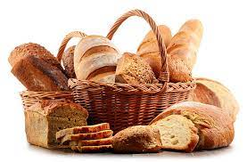

INGREDIENTS
BREAD
BREAD-INGREDIENTS
- Floor
- Water
- Yeast
- Salt
- Sugar
- Milk
- Eggs
- Oil/Fat
CAKE
CAKE-INGREDIENTS
- Cake Flour
- Organic Dairy
- Eggs
- Full Fat Milk
- Caster Sugar
- Vanilla Extract
- Quality cocoa powder
- Chocolate
RECIPE FOR MAKING HOME BREAD
- Assemble bread ingredients
- Dissove the yeast and activate it by proofing
- Add the remaining ingredients and mix
- Knead the bread
- First rise
- Punch dough and shape it
- Second rise
- Bake the bread
- Cool the bread
RECIPE FOR MAKING CAKES
- Preheat oven to 350 decreese
- Prepare three 8 or 9 inch cake pans for baking by coating them with softened butter,lining with a piece of parchment fitted to the cake pan
- Whisk together the flour,baking powder,baking soda and salt in a large bowl.set aside.
- Cream the butter with an electric mixer.Then add the sugar.Cream together for about 8 or more minutes.
- Add the eggs,one at a time,and mis until just combined
- Add one-third of the flour mixture and mix untill well combined.Repeat with one third of the flour mixture followed by the buttermilk and then ending with the remaining flour mixture
- Mix in vanila untill well combined
- Divide cake batter among the cake pans and bake for 25-30 mins,untill the eggs of the cake turn loose from the pans and a toothpic inserted into the middle of the cake comes out clean.
- Remove from the oven and allow to coll for about 10 mins in the pan.Then,carefully turn out the cake onto wire cooling racks and allow to cool ccompletely
- Frost cake with chocolate Buttercream frosting.or your desired frosting
RECIPE FOR MAKING COOKIES
- Heat oven to 375 decrees.in a small bowl,mix flour,baking soda and salt
- In a large bowl,beat softened butter and sugars with electrict mixer on medium speed or mix with spoon about 1 min or untill fluffy,scraping side of bowl occasionally
- Beat i egg and vanilla untill smooth.Stir in flour mixture just untill blended.Stir chocolate chips and nuts
- Onto ungreased cookie sheets,drop dough by rounded tablespoonfuls 2 inches apart
- Bake 8 to 10 mins or untill light brown.Cool 2 mins.Remove from cookie sheet to cooling rack.Cool completely,about 30 mins.Store covered in airtight container